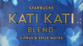

카티카티 블렌드
 여름에 어울리는 상쾌한 커피로 취향에 따라 차갑게 혹은 따뜻하게 즐길 수 있습니다. 동아프리카산 원두가 블렌딩된 이 커피는 여름에 어울리는 산뜻한 커피로 취향에 따라 차갑게 혹은 따뜻하게 즐길 수 있습니다. 허브, 감귤, 스파이스, 시트러스 향이 나며 블루베리 머핀, 블루베리 치즈케익, 마카다미아 레몬 쿠키와 잘 어울리는 커피입니다.
베란다 블렌드
- 부드럽고 친근하다.
- 은은하고 부드럽다.
- 달콤하고 부드럽다.
- 좋은 친구와 함께 보내는 맑은 날, 한가한 시간.
특별히 선택한 고품질의 라틴 아메리카 원두 블렌드를 단시간 로스팅하면 부드러운 코코아의 섬세한 뉘앙스와 살짝 볶은 견과류 향이 살아납니다. 은은하고 달콤한 풍미가 살아있는 이 커피는 친구를 초대한 자리에 어울리는 유쾌하고 품위있는 분위기를 연출하는데 매우 잘 어울립니다.
비아 디카페인 하우스 블렌드
스타벅스에서 가장 인기 있는 커피 중 하나인 하우스 블렌드는 중간 정도의 무게감을 가지고 있으며,
깨끗하고 깔끔한 맛과 너트향의 풍미가 잘 조화된 라틴 아메리카 혼합커피 입니다.
이산화탄소(CO2)를 활용한 천연 디카페인 방식으로 카페인을 제거하여 기존 하우스 블렌드와 동일한 맛과 풍미를 가지고 있습니다.
오리가미 애니버서리 블렌드
매년 가을 출시되며 더욱 나아지고 있는 애니버서리 블렌드는 진하고 독특한 풍미가 특징인 스타벅스만의 특별한 원두입니다. 아시아/태평양 커피와 숙성된 인도네시아 원두가 풍부하게 혼합된 꽉 찬 무게감의 블렌드 커피로 독특하고 향긋한 맛의 특색과 깊고 풍부한 풍미와 허브와 스파이시한 특성을 갖고 있습니다.